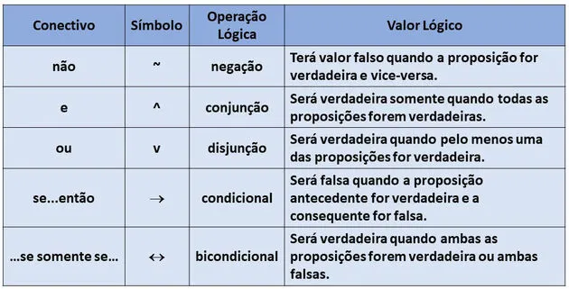

Instruções
Desvendando a lógica: Simples e claro
A tabela verdade é uma ferramenta usada no estudo da lógica matemática para determinar se uma proposição é verdadeira ou falsa.
Basicamente, ela ajuda a avaliar o valor lógico de uma sentença. Em lógica, as proposições são frases que expressam pensamentos completos, como afirmações de fatos ou ideias.
A tabela verdade é especialmente útil para analisar proposições compostas, formadas por combinações de proposições simples. O valor lógico de uma proposição composta depende do valor de cada uma das proposições que a compõem.
Para combinar essas proposições simples e criar proposições compostas, utilizamos conectivos lógicos, sendo símbolos que representam operações lógicas.
Como jogar?
Também não sou o maior fã da teoria...
Bora jogar?
Clique na logo para voltar ao menu